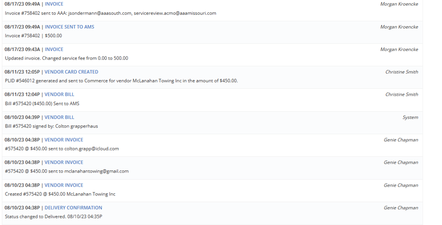
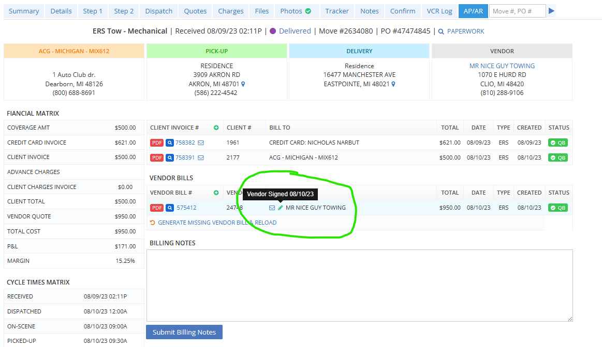
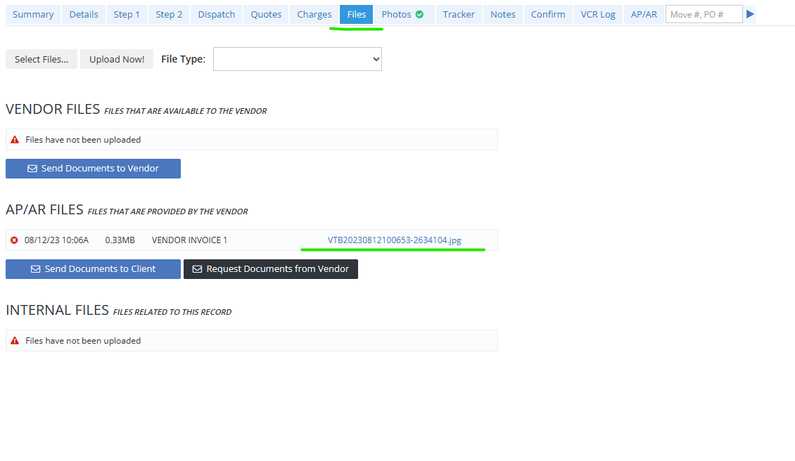
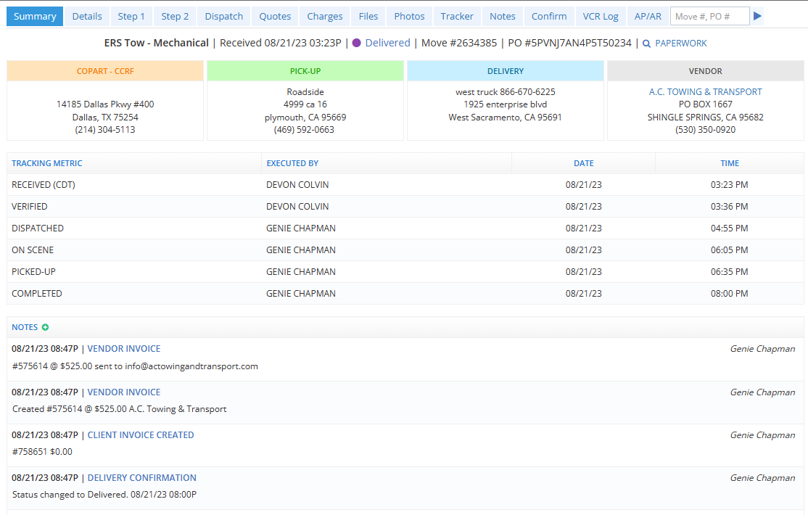
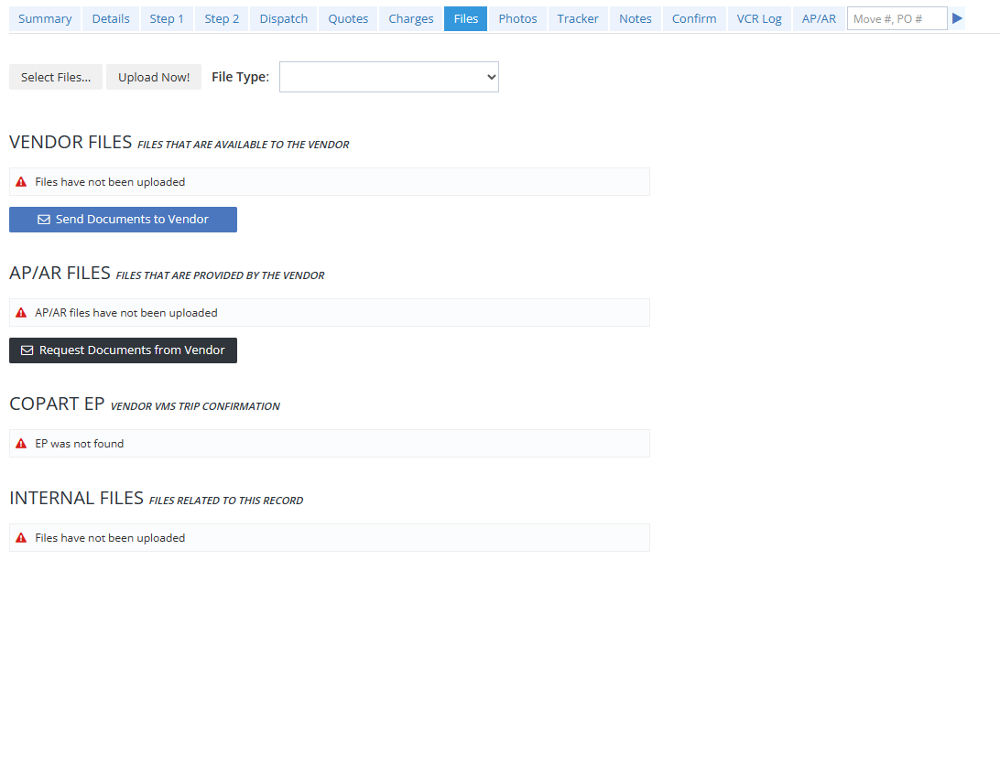
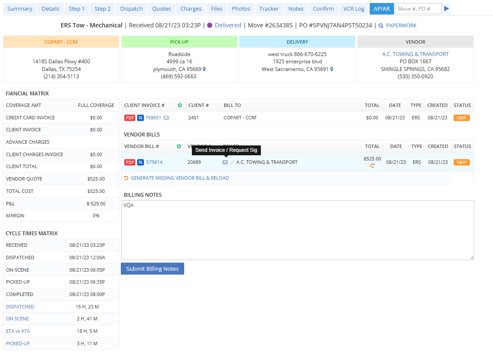
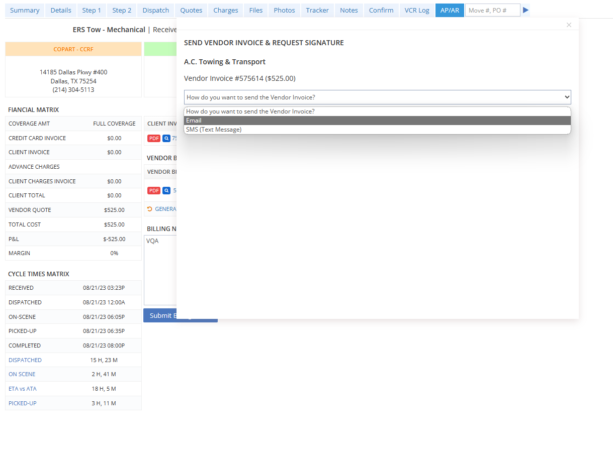

This move has been completed, invoiced and paid.
Notes named
Here you can see the move go from Delivered, to us requesting an invoice, the vendor signing the invoice and then the invoice being paid.

In the
This indicates the vendor e-signed our invoice and payment should have been processed.

You can also check the
If either of these are present - payment should be processing within 24-48 hours of being invoiced.
If the vendor has waited more than 24-48 hours for payment - send an email to

Here you can see the move was marked delivered and our system sent out an invoice to be signed.
This move has not been paid because we do not have a signed invoice.
Once the vendor signs, the system will notate that the invoice was signed and by who.
If you look in the


We can manually resend the invoice to be signed in the "AP/AR" tab by clicking the letter icon.
6. Once you click "Check for Overages" - the program will calculate if any additional funds will be needed from ARS in order to proceed.
This is ONLY for fully covered vehicles, if the CX has a "partial coverage" - calculate the OOP MANUALLY.
In this case, the Vendor Quote is within ARS rates and within TP profit minimum.
This will trigger the dispatch disclaimer and tell you to proceed with your dispatch as no additional funding is needed.
7. Lets say the VQ was $375 instead - it will kick back a red colored result showing $88.70 in additional funding needed to proceed.
As you can see, no dispatch disclaimer is populated therefore you are not authorized to proceed with the dispatch.
This will trigger a "FUNDS APPROVED" button directly under the amount.